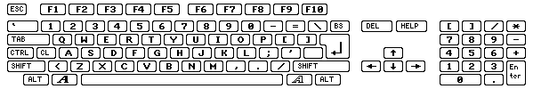
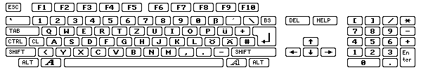

Все ключи, используемые с WHDLoad должны быть определены как RAW-коды.
Вот таблица, которая показывает все клавиши в
шестнадцатиричном формате:
для сравнения, вот американкая раскладка
клавиатуры:

здесь французская раскладка клавиатуры:

а здесь немецкая раскладка клавиатуры:

а здесь italian раскладка клавиатуры:

| rawkey порт 0 звичайно миша |
rawkey порт 1 звичайно джойстик/геймпад |
Миша | Джойстик | Геймпад | Megadrive | Master System |
|---|---|---|---|---|---|---|
| $100/256 | $110/272 | ліва кнопка | постріл | Червона/Select | B | A |
| $101/257 | $111/273 | права кнопка | доп. постріл | Синя/Stop | C | B |
| $102/258 | $112/274 | середня кнопка | ||||
| $103/259 | $113/275 | Play | ||||
| $104/260 | $114/276 | Назад/Left Ear | ||||
| $105/261 | $115/277 | Вперед/Right Ear | ||||
| $106/262 | $116/278 | Зелена/Shuffle | ||||
| $107/263 | $117/279 | Жовта/Loop | ||||
| $108/264 | $118/280 | Червона/Select | ||||
| $109/265 | $119/281 | Блакитна/Stop |
В WHDLoad версій 16.4 - 16.7 можливо було використати QuitKey $73 для виходу по натисканню лівої кнопки миші. Починаючи з WHDLoad версії 16.8, для цього необхідно використати сканкод $100.